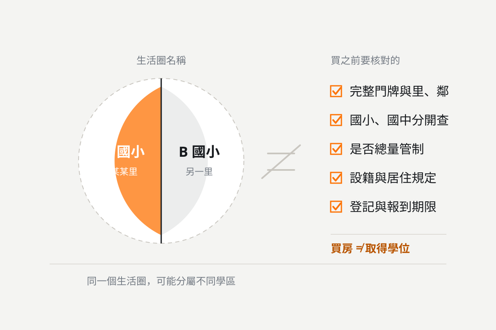

為了學區買房值得嗎？高雄美術館、農十六、瑞豐巨蛋、中都購屋指南
學區可以是購屋的重要考量，但生活圈名稱不等於正式學區，買房也不等於取得學位。先確認孩子的入學資格，再比較住宅與預算。

為了孩子的教育環境，許多家長會提前研究學區、比較住宅，甚至考慮搬家。不過，為了學區買房是否值得，不能只看學校名氣，也要確認入學資格、家庭預算，以及房子是否適合長期居住。
如果已確認孩子的入學條件，房屋也符合家庭的財務、通勤與生活需求，學區可以成為購屋的重要考量。若只因為「附近有熱門學校」就提高預算，卻沒有查清楚學區與入學規定，購屋結果可能與期待不同。
在高雄，美術館、農十六、瑞豐巨蛋與中都是家庭購屋時可以比較的生活圈。這四個區域各有居住條件，但生活圈名稱並不等於正式學區。挑選房子時，應從實際地址出發，把教育需求與日常生活一起評估。
學區房是什麼？離學校近，就能入學嗎？
「學區房」通常是指位於特定學校招生學區內的住宅，但它不是保證入學的標章。距離學校近，也不代表一定屬於該校學區。
高雄市的國小、國中學區應依官方公告查詢，部分範圍會細分到里、鄰，也可能設有自由學區。國小與國中的劃分需要分別確認，不能查到國小學區後，就推定未來的國中也符合期待。
購屋前，建議先確認：
- 01 房屋完整門牌及所屬里、鄰。
- 02 孩子預計入學年度的國小、國中學區。
- 03 目標學校是否實施總量管制。
- 04 設籍、實際居住、證明文件與入學排序規定。
- 05 登記、報到期限，以及未獲錄取時的分發安排。
例如，高雄市鼓山區中山國小的 115 學年度公告載明，學區為龍水里，並屬總量管制學校，入學須依公告辦理登記與審查。這說明即使房屋位於學區內，也需要進一步確認入學條件，不能把買房直接等同取得學位。來源：中山國小 115 學年度新生入學公告
本站的學區查詢工具收錄鼓山區、左營區與三民區的國小、國中學區劃分，資料逐字轉錄自高雄市 115 學年度學區劃分一覽表，可以用實際門牌先對一次。
買學區房的第一步，是核對地址與入學規定，再比較房屋。
高雄美術館、農十六、瑞豐巨蛋、中都，如何比較？
四個生活圈的比較，應放在家庭每天會使用的條件上：孩子如何上學、家長如何通勤、採買是否方便，以及住宅本身是否合適。
| 生活圈 | 建議優先評估的方向 | 看屋時應確認 |
|---|---|---|
| 美術館 | 藝文、公園與家庭休閒需求 | 正式學區、步行接送路線、通勤及社區管理 |
| 農十六 | 公園使用與日常生活安排 | 住宅所在街廓、上下學車流、採買與停車動線 |
| 瑞豐巨蛋 | 捷運使用與商圈便利性 | 到站實際路線、夜間聲音、人潮與接送安全 |
| 中都 | 公園休憩與住宅空間需求 | 周邊機能、施工情況、學校與工作地點的交通 |
美術館生活圈：把教育需求與休閒環境一起考慮
高雄市立美術館園區結合藝術、文化、休閒與自然生態，對重視親子活動、散步與戶外空間的家庭，是值得納入評估的生活資源。來源：高雄市立美術館園區介紹
挑選美術館生活圈住宅時，除了確認學區，也要實際走一遍家到學校的路線：是否需要穿越主要道路？人行空間是否連續？下雨天如何接送？
同樣標示「美術館生活圈」的物件，位置、交通與學區可能不同。看屋時應要求確認完整地址，不宜只依廣告上的區域名稱判斷。
農十六生活圈：評估家庭每天使用的動線
評估農十六住宅時，可以把公園活動、採買、接送與家長通勤放在同一張生活地圖上。
建議在平日上學及下班時段到現場觀察，確認車流、停車與進出社區的情況。即使地圖上的距離不遠，實際路線也可能因路口、車流或接送方式而增加時間。
學區同樣需要細查。以 115 學年度鼓山區國小學區公告為例，龍華國小範圍包含龍子里及明誠里部分鄰別，明誠里另有部分鄰別與勝利國小屬自由學區。選屋時，里、鄰資訊比「農十六」這個生活圈名稱更能幫助確認學區。來源：鼓山區公所國民小學學區劃分
瑞豐巨蛋生活圈：便利性也要經過實際體驗
考慮瑞豐巨蛋住宅的家庭，可以把捷運通勤列入評估。高雄捷運巨蛋站（R14）位於左營區博愛二路 485 號地下一層，但房屋到車站的便利程度，仍應以實際步行路線確認。來源：高雄捷運巨蛋站資訊
看屋時，建議分別觀察平日早晨、晚上與假日的環境，了解住宅是否受到周邊人潮、交通或營業聲音影響。
便利的生活圈也需要適合的住宅位置。靠近主要道路、商業活動或巷內的物件，居住感受可能不同，應依家庭作息選擇。
中都生活圈：把休憩空間與日常機能一起檢查
中都濕地公園位於三民區愛河中下游、占地近 12 公頃，民國 100 年 4 月啟用，園區保留過去合板工廠的儲木河道，鄰近國定古蹟中都唐榮磚窯廠，是評估中都居住環境時可以實地體驗的公共資源。來源：高雄市政府工務局公園處出版品「高雄市中都濕地公園」
選擇中都住宅時，建議進一步確認日常採買、就醫、接送與通勤是否符合需要，也應觀察附近是否有施工，以及施工對現階段居住的影響。
對有孩子的家庭而言，公園是生活加分項目；學區資格、接送安全與住宅品質仍需個別查核。
哪些家庭適合為了學區買房？
適合為了學區買房的家庭，通常同時具備明確教育需求、可承擔的購屋成本，以及長期居住計畫。
可以從三個問題開始判斷。
一、已經了解學校，也確認入學條件了嗎？ 除了學校名氣，應了解教學特色、校園環境、課後安排，以及孩子的個性與學習需求。接著，再確認家庭是否符合當年度入學規定。
二、即使孩子畢業，仍願意住在這裡嗎？ 孩子的就學階段會改變，房子則可能持有更久。若住宅同時符合工作通勤、生活機能與家庭空間需求，購屋理由會更完整。
三、買房後，還保有生活與教育預算嗎？ 除了頭期款與房貸，也要考慮裝修、管理費、修繕、稅費及家庭備用金。若為了學區提高購屋預算，反而壓縮日常生活與孩子的教育支出，就需要重新比較方案。可以用本站的房貸試算工具，從每月可負擔的還款金額反推總價與自備款。
學區房有哪些成本與風險？
學區房是否值得，應以具體物件與家庭條件評估，不能只靠區域印象。
首先是價差是否合理。房價可能同時受到屋齡、樓層、面積、車位、屋況與社區條件影響，不能把兩間房子的全部價差都歸因於學區。
其次是住宅是否適合居住。漏水、採光、通風、格局、電梯與管理品質，都會影響家庭長期使用。學區符合期待，仍需要完整看屋與屋況查核。
最後是未來出售的不確定性。住宅能否順利轉售，仍受市場、價格與物件條件影響。「學區房一定保值」或「未來一定好賣」都不適合作為購屋前提。
查詢成交案例時，可使用內政部不動產交易實價查詢服務網，優先比較同社區或條件相近的住宅，並留意交易時間與車位資訊。本站也整理了四大生活圈共 254 個社區的逐筆成交紀錄，可以直接比對同社區的樓層、坪數與單價。
為了學區，買房還是租屋？
如果尚未確定長期居住地點，租屋可以列為比較方案；但租屋能否符合入學資格，仍需要向學校確認，不能只看租約或設籍地址。
| 比較項目 | 買房 | 租屋 |
|---|---|---|
| 初期資金 | 頭期款及相關交易、裝修支出 | 押金、租金及搬遷支出 |
| 每月支出 | 房貸、管理費與住宅維護等 | 租金及契約約定費用等 |
| 搬遷彈性 | 需考慮出售、出租與交易成本 | 需考慮租期、續租及搬遷 |
| 居住安排 | 可依需求規劃，但須遵守相關規範 | 使用與裝修依租約約定 |
| 入學資格 | 查核學區、設籍、居住與審查規定 | 查核租賃文件、設籍、居住與審查規定 |
比較時，建議使用相同的居住期間與住宅條件。買房須考慮利息、交易及持有支出；租屋須考慮租金與搬遷成本。不要把房貸本金全部視為消耗，也不要把尚未發生的房價上漲當成確定收益。
買高雄學區房前，必做的七項查核
- 01 確認完整地址與里、鄰。不要只接受「美術館學區」或「巨蛋學區」等概括說法。
- 02 分別查詢國小與國中。以孩子預計入學年度的官方公告為準。
- 03 確認總量管制及入學排序。了解文件、期限與未錄取時的安排。
- 04 實際走接送路線。觀察路口、人行道、車流及雨天接送方式。
- 05 試走家長通勤動線。將上班、接送與課後安排一起計算。
- 06 檢查屋況與社區。確認格局、採光、修繕需求、管理及停車。
- 07 比較總成本。把購屋支出、教育費用及家庭備用金一併納入。
為了學區買房，讓教育與生活一起到位
在高雄美術館、農十六、瑞豐巨蛋與中都挑選住宅，學區可以是重要的起點，但完整的購屋決策還需要考慮家庭每天的生活。
先確認孩子的入學資格，再比較住宅與預算，才能判斷為了學區買房是否值得。真正適合的房子，應讓孩子上學、家長通勤與家庭生活都能妥善安排。
正在比較這四個生活圈的住宅嗎？歡迎與我們討論目標區域、購屋預算、孩子預計入學年度及通勤需求，讓看屋方向更貼近家庭需要。入學資格則請依教育局及學校公告確認。
資料查核日期：2026 年 10 月 6 日。本文引用 115 學年度公告作為說明；其他學年度、新生及轉學生的適用規定，請查詢最新官方資訊。